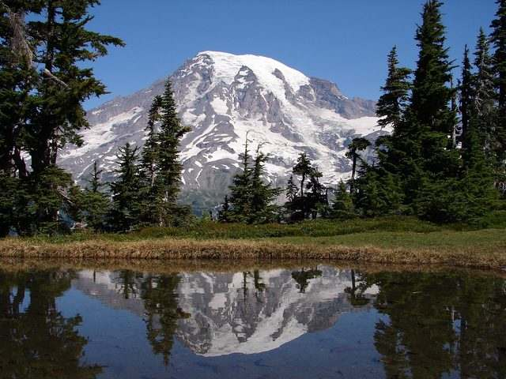
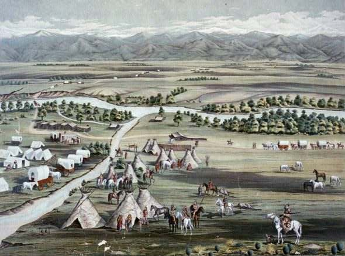

| Place | A town in the West, long ago |
| Guide | Opti |
| Curator | You |


Scout the Western Town

In your video, you say these 2 sentences:
- 1This is a town like the ones built in the West, and I see ___.
- 2People came to the West to ___.
Practice now. Say both before the timer ends.
In VR, this page is on the Canvas tab too.
Open the On-Demand app. Click Explore. Type Western in Filter environments. Click Western Town, then Begin Solo.
Move with the thumbstick. Walk down the main street. Look at the buildings and the train.
Open your menu, click Library, then Camera. Move the tablet until the street and the buildings fit.
Click Record video. Say your 2 sentences. Click it again to stop.
Click the Canvas tab and pick 3.07.06 VR · Western Town Diorama. Click Choose from My Files, pick your video, click Use this file, then Submit to Canvas. Look for the green Submitted tag.
Press the Meta button, then click Quit. Check that your video is in the Canvas assignment. Not there? Open Having trouble in VR?
🛟 Having trouble in VR?Steps with pictures, and a how-to video
These pictures come from other maps. Your map will be Western Town, but the buttons are the same.
🖥️ First time only: connect Canvas (on your computer)

Go to xr.optimaed.com. Log in with your VR login.

Click Connect to Canvas. Log in to Canvas, then click Authorize. You will see Canvas connection completed.

Click Canvas on the left and pick our class. You only do this one time.
📄 Only if the assignment has a file

Open the assignment. Click Open in Canvas to download the file. Then click My Files and Upload File.
🥽 In the headset

Click Explore. Type the map name in Filter environments.

Click the map, then click Begin Solo.

Press the top button on your right controller. Click the Canvas tab and pick our assignment. Tip: point at a mint side grip and squeeze to pull the tablet to your hand.

Click Models. Type the gray word in the search box. Click a model to bring it out.

Grab a model with the palm trigger. Use both palm triggers to make it bigger or smaller.

Click Library, then Files. Pick your file to place it.

Click Library, then Camera. Move the tablet until the place fits. Click Record video and talk. Click it again to stop.

Click the Canvas tab and pick our assignment. Click Choose from My Files, pick your newest video, then Use this file.

Click Submit to Canvas. Look for the green Submitted tag. To leave, press the Meta button, then click Quit.
🔁 Didn’t work in VR? Two other ways

Go to xr.optimaed.com and click Canvas. Pick our assignment, click Choose from My Files, pick your video and submit it.
Your photos and videos save to My Files at xr.optimaed.com. You can also download your video there and upload it to the Canvas assignment yourself.
Which One Does Not Belong?